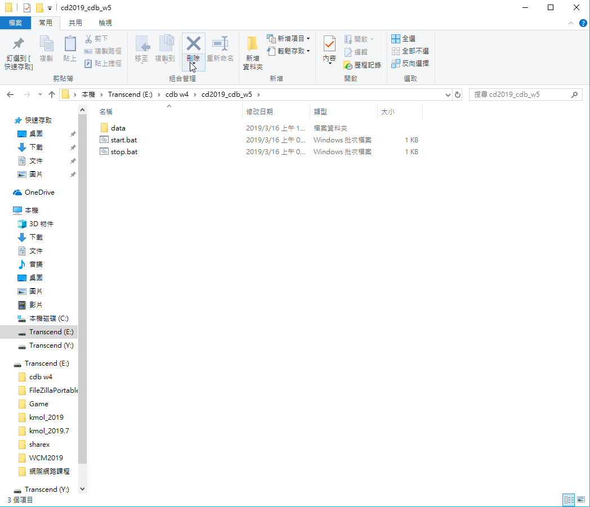
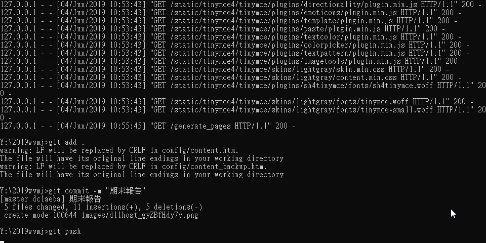

建立 Git 倉儲, 並 clone 倉儲至近端工作後, 對遠端倉儲改版
可攜程式系統中已經內建 git, 可以在啟動 start.bat 後, 執行 git 指令.
建立 Git 倉儲, 共分為兩類, 一類是直接在 Github 網際介面下建立倉儲時, 要求建立 README.md 檔案, 之後可以直接在近端, 以 git clone 加上倉儲連線 URL, 將倉儲clone一份到近端, 並以最新版本作為工作目錄, 使用者改版後, 可以直接透過 git add, commit 與 push 對遠端倉儲改版.
另一類則是故意在 Github 網際介面下建立倉儲時, 不要建立任何檔案, 而是在近端自行利用 git 指令建立倉儲架構, 新增內容後, 以 git remote add 設法在近端倉儲中納入 origin URL 後, 將近端倉儲版本新增提交推送到遠端.

